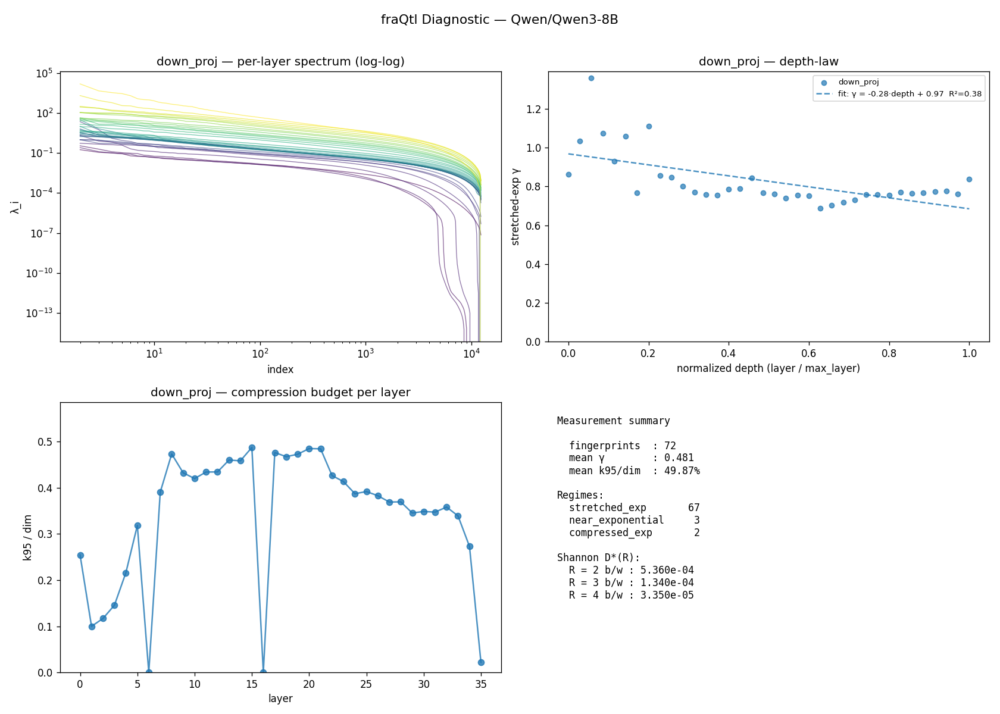

fraQtl Diagnostic — Qwen/Qwen3-8B
v0.1.1 ·
36 layers ·
projections: down_proj, o_proj ·
476.8s on cuda
TL;DR
Normal transformer, limited compression headroom.- 67/72 layers fall in the standard stretched-exponential class (KWW). 5 in other regimes, 0 unfit.
- Effective rank is 50% of dim — most eigendirections are active; rank-based compression is tight.
- Stretched-exp γ is 0.48 — steep decay, fast compression recovery.
This is a measurement tool. For actual compression outcomes, visit https://fraqtl.ai
Measurement summary
| Metric | Value |
|---|
| Fingerprints (layer × projection) | 72 |
| Mean γ (stretched_exp regime, non-poor fits only) | 0.481 |
| Mean k95 / dim | 49.87% |
| Regimes | 67 stretched_exp, 3 near_exponential, 2 compressed_exp |
| Fit quality | 71 good · 1 moderate · 0 poor |
Shannon rate-distortion ceiling D*(R)
geometric mean over all layers at each bit budget R. Theoretical floor, not a prediction —
the actual PPL a real compressor achieves depends on the recipe (sign correction, rank protection, etc.).
| R (b/w) | D*(R) geomean |
|---|
| 2 | 5.360e-04 |
| 3 | 1.340e-04 |
| 4 | 3.350e-05 |
Depth-law fits
| Projection | Slope | Intercept | R² | γ p10/p50/p90 | n |
|---|
| down_proj | -0.283 | 0.968 | 0.379 | 0.736 / 0.770 / 1.047 | 36 |
| o_proj | +0.078 | 0.186 | 0.135 | 0.148 / 0.223 / 0.294 | 36 |
Per-layer fingerprint (first 40)
| Layer | Proj | dim | γ | regime | fit |
k95 | k99 | knee |
|---|
| 0 | down_proj | 12288 | 0.863 | stretched_exp | good | 3127 | 5255 | 6796 |
| 0 | o_proj | 128 | 0.050 | stretched_exp | good | 82 | 112 | — |
| 1 | down_proj | 12288 | 1.035 | near_exponential | good | 1227 | 2188 | 3128 |
| 1 | o_proj | 128 | 0.284 | stretched_exp | good | 75 | 108 | — |
| 2 | down_proj | 12288 | 1.359 | compressed_exp | moderate | 1436 | 2558 | 3315 |
| 2 | o_proj | 128 | 0.208 | stretched_exp | good | 72 | 107 | — |
| 3 | down_proj | 12288 | 1.074 | near_exponential | good | 1790 | 3093 | 4229 |
| 3 | o_proj | 128 | 0.200 | stretched_exp | good | 72 | 107 | — |
| 4 | down_proj | 12288 | 0.929 | stretched_exp | good | 2655 | 4416 | 5662 |
| 4 | o_proj | 128 | 0.245 | stretched_exp | good | 81 | 112 | — |
| 5 | down_proj | 12288 | 1.059 | near_exponential | good | 3913 | 6185 | 6880 |
| 5 | o_proj | 128 | 0.197 | stretched_exp | good | 85 | 113 | — |
| 6 | down_proj | 12288 | 0.768 | stretched_exp | good | 1 | 1 | — |
| 6 | o_proj | 128 | 0.238 | stretched_exp | good | 98 | 120 | — |
| 7 | down_proj | 12288 | 1.112 | compressed_exp | good | 4801 | 7161 | 7475 |
| 7 | o_proj | 128 | 0.267 | stretched_exp | good | 85 | 110 | — |
| 8 | down_proj | 12288 | 0.858 | stretched_exp | good | 5818 | 8622 | 9091 |
| 8 | o_proj | 128 | 0.258 | stretched_exp | good | 92 | 117 | — |
| 9 | down_proj | 12288 | 0.849 | stretched_exp | good | 5316 | 8161 | 8851 |
| 9 | o_proj | 128 | 0.211 | stretched_exp | good | 84 | 113 | — |
| 10 | down_proj | 12288 | 0.802 | stretched_exp | good | 5163 | 8077 | 8950 |
| 10 | o_proj | 128 | 0.187 | stretched_exp | good | 88 | 116 | — |
| 11 | down_proj | 12288 | 0.771 | stretched_exp | good | 5336 | 8287 | 9096 |
| 11 | o_proj | 128 | 0.244 | stretched_exp | good | 90 | 117 | — |
| 12 | down_proj | 12288 | 0.758 | stretched_exp | good | 5340 | 8331 | 9166 |
| 12 | o_proj | 128 | 0.217 | stretched_exp | good | 79 | 110 | — |
| 13 | down_proj | 12288 | 0.757 | stretched_exp | good | 5655 | 8598 | 9257 |
| 13 | o_proj | 128 | 0.234 | stretched_exp | good | 80 | 110 | — |
| 14 | down_proj | 12288 | 0.785 | stretched_exp | good | 5636 | 8584 | 9204 |
| 14 | o_proj | 128 | 0.186 | stretched_exp | good | 92 | 117 | — |
| 15 | down_proj | 12288 | 0.790 | stretched_exp | good | 5992 | 8879 | 9352 |
| 15 | o_proj | 128 | 0.156 | stretched_exp | good | 87 | 116 | — |
| 16 | down_proj | 12288 | 0.845 | stretched_exp | good | 1 | 1 | 8833 |
| 16 | o_proj | 128 | 0.214 | stretched_exp | good | 92 | 118 | — |
| 17 | down_proj | 12288 | 0.768 | stretched_exp | good | 5856 | 8782 | 9322 |
| 17 | o_proj | 128 | 0.122 | stretched_exp | good | 79 | 112 | — |
| 18 | down_proj | 12288 | 0.762 | stretched_exp | good | 5746 | 8708 | 9347 |
| 18 | o_proj | 128 | 0.208 | stretched_exp | good | 87 | 116 | — |
| 19 | down_proj | 12288 | 0.740 | stretched_exp | good | 5811 | 8757 | 9390 |
| 19 | o_proj | 128 | 0.179 | stretched_exp | good | 84 | 115 | — |
Figures
(generate the PNG with report.to_png(path) — shown here if embedded)

About
This diagnostic measures information-theoretic compressibility from the input covariance
spectrum of each layer. It does not perform compression — it reports the ceiling and
shape. The fraQtl compression engine uses this fingerprint
plus additional engineering (sign correction, per-model calibration) to get closer to the
ceiling in practice.